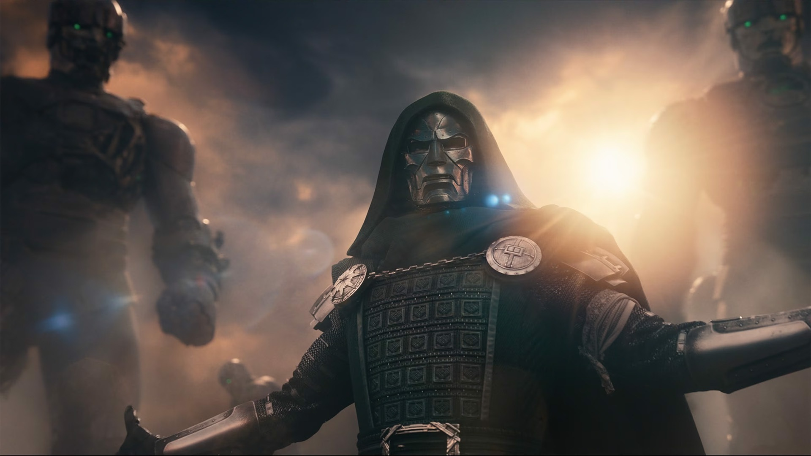
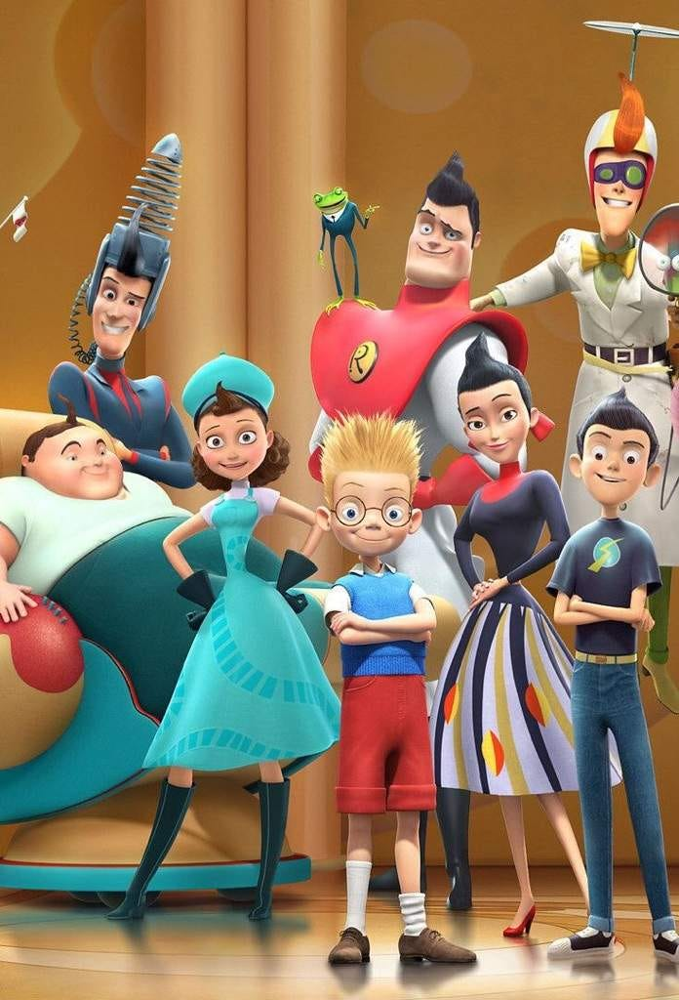
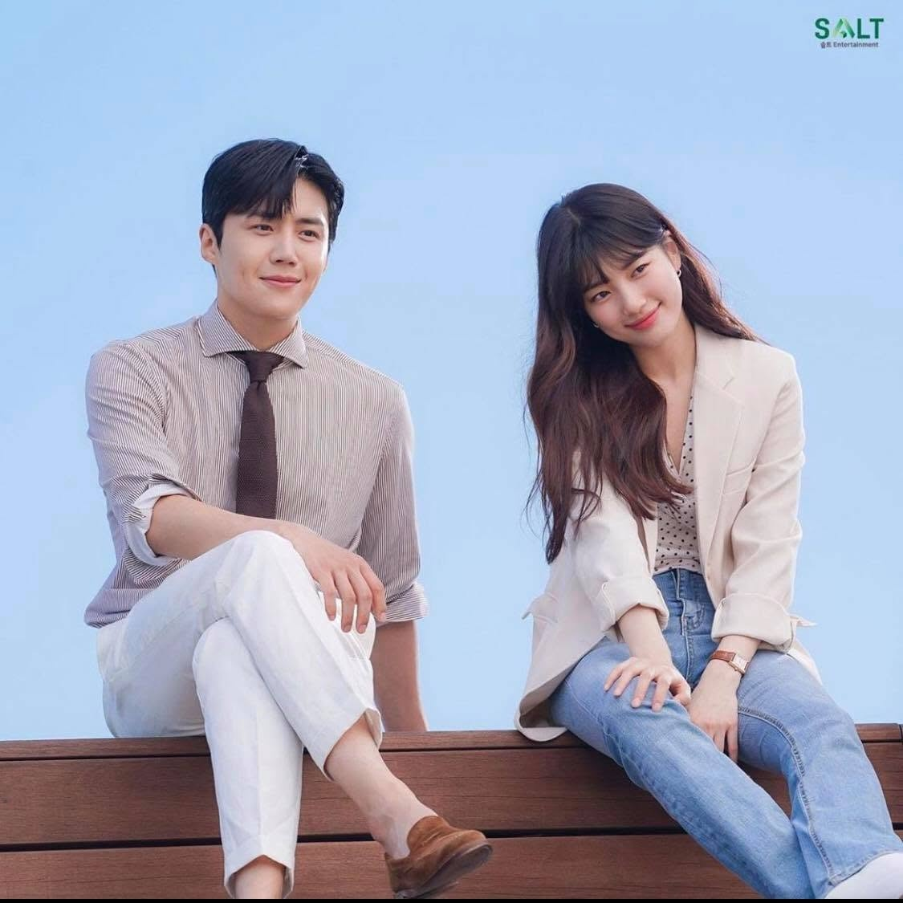
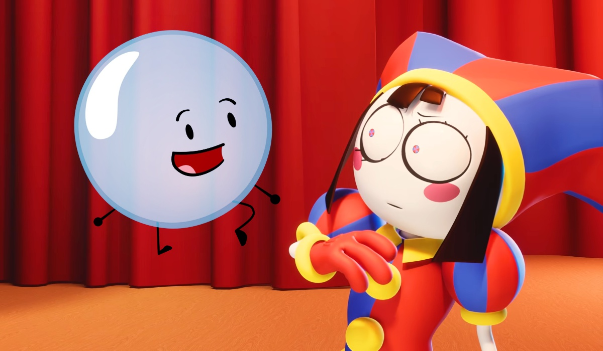
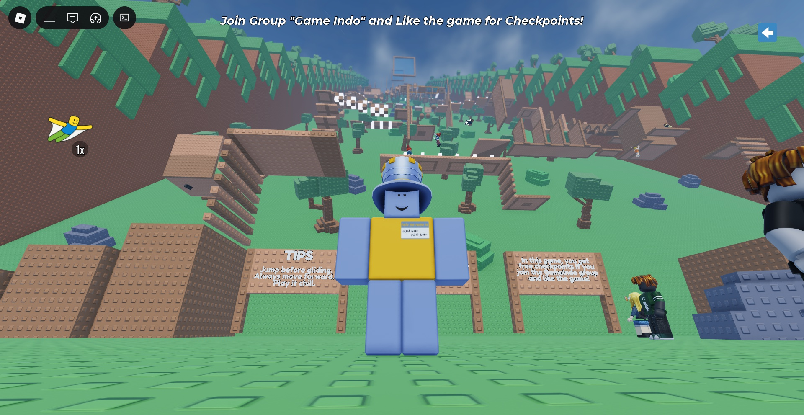
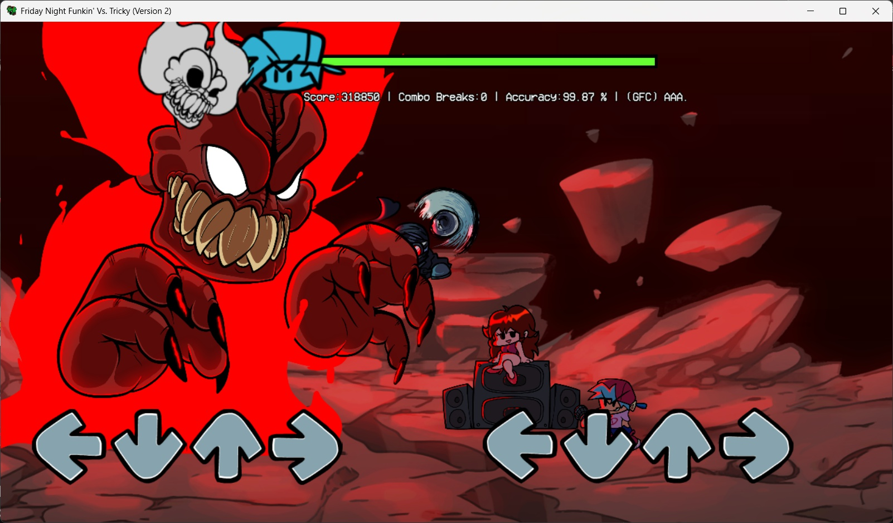

Marvel Cinematic Universe
I’ve been following the MCU for a while now, and it’s been quite an enjoyable experience!
MY HOBBIES & INTERESTS
A glimpse into the things I enjoy doing, watching, listening to, and exploring!
I enjoy listening to a variety of music, ranging from pop songs and OPM to chill beats and pretty much anything in between. I like having a bit of variety in my playlists, so I’m always open to discovering new songs and genres!
As the year comes to a close, I always look forward to the annual megamixes that different creators put together: compilations that bring together popular and trending songs that have defined the year!
Here’s an example from 2025!
Some of the movies and shows I’ve enjoyed over the years!

One of my all-time favorite childhood movies is Meet the Robinsons from Disney! It’s also where I got my motto in life!

I’ve been following the MCU for a while now, and it’s been quite an enjoyable experience!

I’ve also watched a few K-Dramas, including Start-Up, The Uncanny Counter, and The Wonderfools.

I also enjoy following indie animated shows, particularly The Amazing Digital Circus (TADC) and Battle for Dream Island (BFDI).
A little about the games I’ve played and enjoyed over the years!

Roblox has been one of my childhood games since 2014! I’ve spent countless hours exploring its many games and experiences over the years, and it remains one of my go-to platforms for entertainment.
That’s over a decade of playing already!

I also used to follow Friday Night Funkin’ and its ever-growing modding scene, particularly popular mods like Whitty and Tricky. Those were certainly some memorable times!
My family and I have traveled to quite a number of places around the Philippines over the years. From scenic destinations to interesting landmarks, we’ve had plenty of opportunities to explore different places, experience new things, and create wonderful memories along the way.
It’s always exciting to discover somewhere new, and I’m looking forward to wherever our next adventure takes us!
A collection of destinations across the country, organized by region. Some have already been explored, while others are still waiting to be discovered!
So many places to see, so many memories still to make!